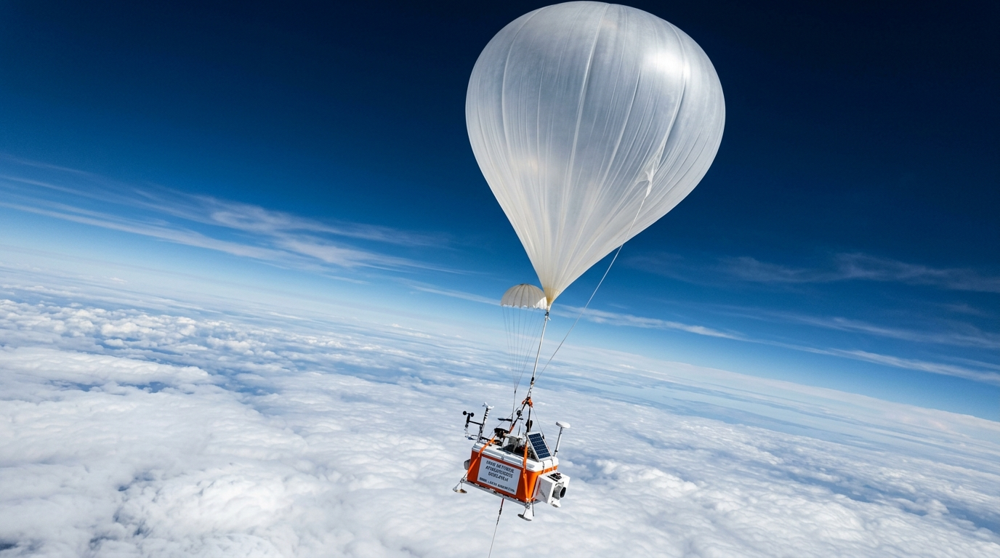

Bài 11: Phương Trình Trạng Thái Của Khí Lí Tưởng

Quá trình biến đổi trạng thái tổng quát: Khi bóng thám không bay lên cao, cả áp suất p, thể tích V và nhiệt độ T đều thay đổi đồng thời
NỘI DUNG BÀI HỌC (CHUẨN SGK GDPT 2018)
1. Quá Trình Đẳng Tích ($\frac{p}{T} = \text{const}$)
Quá trình đẳng tích là quá trình biến đổi trạng thái của một lượng khí xác định khi thể tích $V$ được giữ không đổi ($V = \text{const}$). Ví dụ: Khí bị giam trong bình thép kín chịu lực hoặc xi-lanh bị khóa chặt piston khi đun nóng.
Đối với một lượng khí xác định ở thể tích không đổi, áp suất $p$ tỉ lệ thuận với nhiệt độ tuyệt đối $T$ của khối khí.
2. Phương Trình Trạng Thái Của Khí Lí Tưởng & Phương Trình Clapeyron
Kết hợp cả hai định luật thực nghiệm: Định luật Boyle (đẳng nhiệt $p \cdot V = \text{const}$) và Định luật Charles (đẳng áp $\frac{V}{T} = \text{const}$), ta rút ra hệ thức tổng quát mô tả sự biến đổi trạng thái của khối khí:
📌 Đặc điểm: Áp dụng cho sự biến đổi giữa 2 trạng thái (Trạng thái 1 $\rightarrow$ Trạng thái 2) của một lượng khí xác định (khối lượng $m$ không đổi).
Trong đó $n = \frac{m}{M}$ là số mol khí và $R \approx 8,31\text{ J/(mol}\cdot\text{K)}$ là hằng số khí lí tưởng. 📌 Đặc điểm: Dùng để xác định thông số của 1 trạng thái xác định duy nhất khi biết khối lượng $m$ hoặc số mol $n$.
Bảng So Sánh Phân Biệt 2 Phương Trình (Chuẩn SGK GDPT 2018):
| Đặc điểm so sánh | Phương trình trạng thái khí lí tưởng | Phương trình Clapeyron |
|---|---|---|
| Công thức toán học | $$\frac{p_1 V_1}{T_1} = \frac{p_2 V_2}{T_2}$$ | $$p \cdot V = n \cdot R \cdot T$$ |
| Phạm vi áp dụng | Quá trình biến đổi giữa 2 trạng thái của một lượng khí có khối lượng $m$ không đổi. | Tính toán đại lượng chưa biết tại 1 trạng thái xác định khi biết số mol $n$ (hoặc khối lượng $m$). |
| Thông số cần thiết | Chỉ cần khối lượng $m$ không đổi. Không cần biết hằng số $R$ hay số mol $n$. | Cần biết chính xác số mol $n = \frac{m}{M}$ và hằng số khí $R \approx 8,31\text{ J/(mol.K)}$. |
3. Đồ Thị Đường Đẳng Tích
Đường biểu diễn sự biến thiên của áp suất $p$ theo nhiệt độ $T$ khi thể tích $V$ không đổi gọi là đường đẳng tích.
Đường đẳng tích là một đường thẳng có đường kéo dài đi qua gốc tọa độ $O(0\text{ K}, 0\text{ Pa})$. Đường ứng với thể tích $V_2 > V_1$ có độ dốc nhỏ hơn (nằm phía dưới).
- Trong hệ $(p, V)$: Là đường thẳng song song với trục áp suất $p$. - Trong hệ $(V, T)$: Là đường thẳng song song với trục nhiệt độ $T$.
4. Giải Thích Bằng Thuyết Động Học Phân Tử
Giải thích nguyên nhân vi mô cho quá trình đẳng tích khi đun nóng khí trong bình kín:
Thể tích bình kín cố định $\rightarrow$ mật độ phân tử khí $\mu = \frac{N}{V}$ giữ nguyên không đổi.
Khi nhiệt độ $T$ tăng $\rightarrow$ vận tốc chuyển động nhiệt phân tử tăng lên.
Tần suất va chạm dồn dập hơn và lực va chạm mạnh hơn vào thành bình $\rightarrow$ áp suất $p$ tăng tỉ lệ thuận với nhiệt độ tuyệt đối $T$.
5. Thí Nghiệm Ảo Khinh Khí Cầu Bay (Mô Phỏng 3D)
THÍ NGHIỆM ẢO 3D: KHINH KHÍ CẦU BAY VỤT LÊN CAO
Mô phỏng tương tác💡 Hướng dẫn: Bật đầu đốt đun nóng không khí T ➔ Quan sát thể tích V nở rộng, khối lượng riêng ρ giảm ➔ Lực đẩy Ác-si-mét nâng khinh khí cầu bay vút lên bầu trời!
📌 Quá trình đẳng tích: Thể tích $V$ không đổi ($V = \text{const}$), áp suất tỉ lệ thuận với nhiệt độ tuyệt đối: $\frac{p}{T} = \text{const}$.
📌 Phương trình trạng thái: $\frac{p_1 V_1}{T_1} = \frac{p_2 V_2}{T_2}$ dành cho 2 trạng thái của một lượng khí xác định.
📌 Phương trình Clapeyron: $p \cdot V = n \cdot R \cdot T$ với $R \approx 8,31\text{ J/(mol.K)}$ dùng cho 1 trạng thái cụ thể.
📌 Ứng dụng thực tế: Khinh khí cầu đun nóng không khí $\rightarrow$ khí dãn nở làm khối lượng riêng giảm $\rightarrow$ lực đẩy Ác-si-mét nâng khinh khí cầu bay lên.